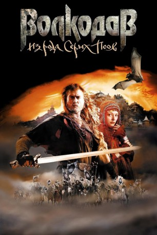

#9992 Wolfhound 
 
 IMDB-Wertung: 5.8 / 10
IMDB-Wertung: 5.8 / 10  Metascore: 0
Metascore: 0 
Einst wurde Wolfshunds Dorfgemeinschaft von Reiterhorden unter Führung des finsteren Maskenmannes Zhadoba ausgelöscht. Jetzt ist er der Sklaverei entwichen und sucht die Abrechnung mit Zhadoba. Da bietet sich der vakante Leibwächterposten bei Prinzessin Elen an. Die soll einen Abkömmling Zhadobas ehelichen, weshalb es Wolfshund ganz recht ist, die Dame an den gegnerischen Hof zu begleiten. Auf der gefährlichen Reise kommen sich Bodyguard und Adelige näher, als es der Staatsräson gut täte.
Jahr: 2006
Dauer: 142 Minuten
FSK: 16
Land: Russland Studio: Senator Home EntertainmentTonspuren:
Untertitel:
Auflösung: 1080p (1920x816) Größe: 5201 MB
Genre: Action, Abenteuer, Fantasy
Regisseur: Nikolay Lebedev
Drehbuch: Nikolay Lebedev, Mariya Semyonova
Soundtrack: Aleksey Rybnikov
Darsteller:
- Aleksandr Bukharov als Volkodav
- Oksana Akinshina als Knesinka Elen
- Eugenia Tudorascu als Khaygal
- Aleksandr Domogarov als Lyudoed
- Natalya Varley als Mat Kendarat
- Juozas Budraitis als Dungorm
- Andrey Rudenskiy als Tilorn
- Evgeniya Sviridova als Niilit
- Nina Usatova als Vozhditsa kharyukov
- Leonid Kulagin als Knes
- Gennadiy Makoev als Zhadoba
- Pyotr Zaychenko als Fitela
- Ilya Sokolovskiy als Avdika
- Alexander Diachenko als Kanaon
- Yelena Korolyova als Molelshchitsa v khrame
- Aleksey Dmitriev als
- Aleksey Osipov als
- M. Steven Felty als Vinitar
- Emmett James als Evrikh
- Igor Petrenko als Luchezar
- Anatoliy Belyy als Vinitar
- Rezo Esadze als Illad
- Sergey Miller als Odnoglazyy
- Artyom Semakin als Evrikh
- Tatyana Lyutaeva als Lekarka
- Lilian Navrozashvili als Ertan
- Vera Ivanova als Vereya
- Aleksandr Gavryushin als Luchezarovich
- Aleksandr Pakhomov als Luchezarovich
- Maksim Mikhailov als Ubiytsa v serom
- Kirill Anisimov als Ugryumets
- Pavel Melenchuk als Malenkiy Volkodav
- Mariya Skosyreva als Mama Volkodava
- Aleksey Korolyov als Otets Volkodava
- Anastasiya Bavlenkova als Sestrenka Volkodava
- Aleksey Kizenkov als Nadsmotrshchik Volk
- Vladimir Koppalov als Zhrets Bogov-Bliznetsov
- Vadim Kolganov als Attalik
- Pavel Sborshchikov als Bravlin
- Aleksandr Seleznyov als Tolmach kharyukov
- Afanasiy Trishkin als Varokh
- Vladimir Balov als Borodach
- Yuray Olchenash als Volkhv
- Sergey Krasnov als Sluga Knesa
- Roman Akimov als Nadsmotrshchik
- A. Baranov als
- Aleksandr Borovikov als
- A. Beonataliev als
- Aleksandr Ilin als
- E. Kelezhaev als
Datei: X:\2006(N-Z)\Wolfhound (2006, FSK16, 1920x816) 3D.mkv seit 15.11.2018
Festplatte: HD 2005(G-Z)-2006(A-Z)
 Es gibt insgesamt 62 Filme in der Gruppe '2006(N-Z)'
Es gibt insgesamt 62 Filme in der Gruppe '2006(N-Z)'